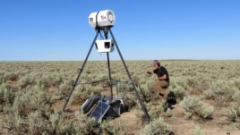

科研人员制造噪音来研究安静的价值
博伊西州立大学的生物学家们一直在美国西部的爱达荷州的森林制造噪音。他们正在制造噪音来研究自然界中安静的价值。他们想要知道 人和动物如何应对噪音污染。
研究人员在博伊西市国家森林一条半公里长的道路两侧安放了户外扬声器。他们通过扬声器播放汽车过往的声音已达两年时间。博伊西州 立大学的杰西·巴伯（Jesse Barber）教授表示，他们发现这些声音导致了候鸟逃离。这些鸟儿也没有长胖。
最近，研究人员播放了用于从地面采集天然气的机器的声音。这种声音在遍布美国西部的天然气田都能听到。巴伯教授表示，这些实验的 目的是为了帮助研究人员了解噪音污染对鸟类、昆虫、蝙蝠、植物以及人类的影响。他说，“我们正在测试这个想法，当这种声音变得更吵 ，野生动物会遭受什么。但是那也会反馈出有多少人会摆脱这种经历，他们有多看重它，以及他们愿意付出多少来保护同样的地方。”
该科研小组还研究了一群以观鸟为乐的志愿者。米奇·莱文哈根（Mitch Levenhagen）是该科研小组的一名研究生。他测量了多少人为噪 音会降低观鸟爱好者识别已记录的鸟类歌曲的能力。他在噪音环境和安静环境中分别录制了8首歌曲。然后他在没有人为噪音的情况下重复了 这个实验。当这些噪音机器关闭后观鸟爱好者都很高兴。观鸟爱好者们表示，人为噪音对他们识别鸟类声音能力的影响比他们预想的要大得 多。观鸟爱好者吉姆·莱昂斯（Jim Lyons）表示，该实验让他更加珍视安静。
“我们可以说，万物都有耳朵。能成为这个实验的一部分很刺激很有趣。我会从现在开始好好想想。”志愿者贾尼斯·恩格尔 (JaniceEngle)表示她也喜欢安静。她说，“我从城市搬到了一个小地方想要找到安静。我非常看重这点。现在要找到这种地方越来越难。减 轻声音的方法有很多种。但是这是一种权衡，因为这总会有成本。而且它涉及到人们的价值观，也就是我们更看重什么。”
美国国家公园管理局为一些噪音污染研究提供了资金。这家联邦机构也正在研究其它减少噪音的方法。这些措施包括给道路铺上新的表面 材料。而且他们开始通过让游客关闭手机的标志创造安静场所。莱芬哈根先生和巴伯教授明年将去加州北部调查穆尔伍兹国家纪念森林和其 它公园的游客他们对噪音有什么感受。
| 地点 | 噪声 | 测试 | |
|---|---|---|---|
| 动物种类 | 影响大小(1-10) | ||
| 小河旁 | 采集天然气的机器声 | 鸟类 | 8 |
| 昆虫 | 3 | ||
| 汽车过往的声音 | 鸟类 | 6 | |
| 昆虫 | 2 | ||
| 高山旁 | 采集天然气的机器声 | 鸟类 | 9 |
| 昆虫 | 4 | ||
| 汽车过往的声音 | 鸟类 | 4 | |
| 昆虫 | 1 | ||
| *此表格数据纯属虚构 | |||